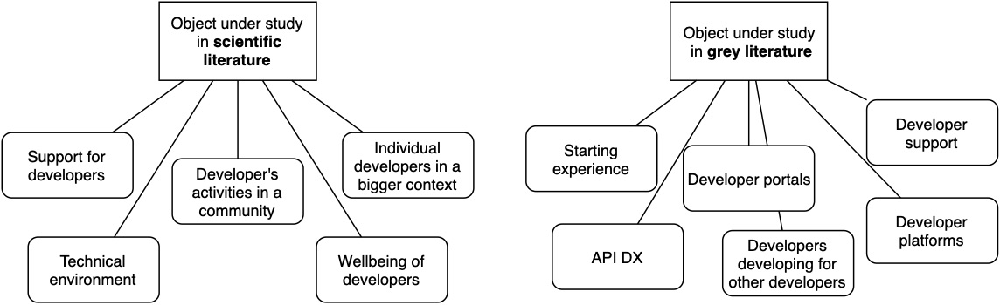
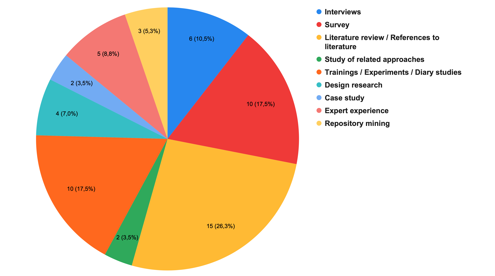
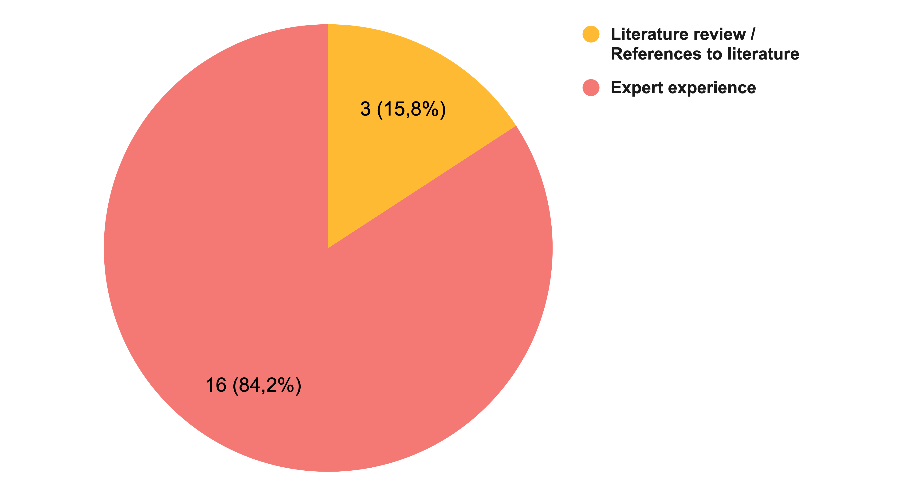
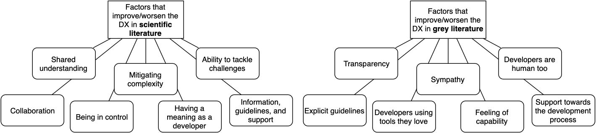
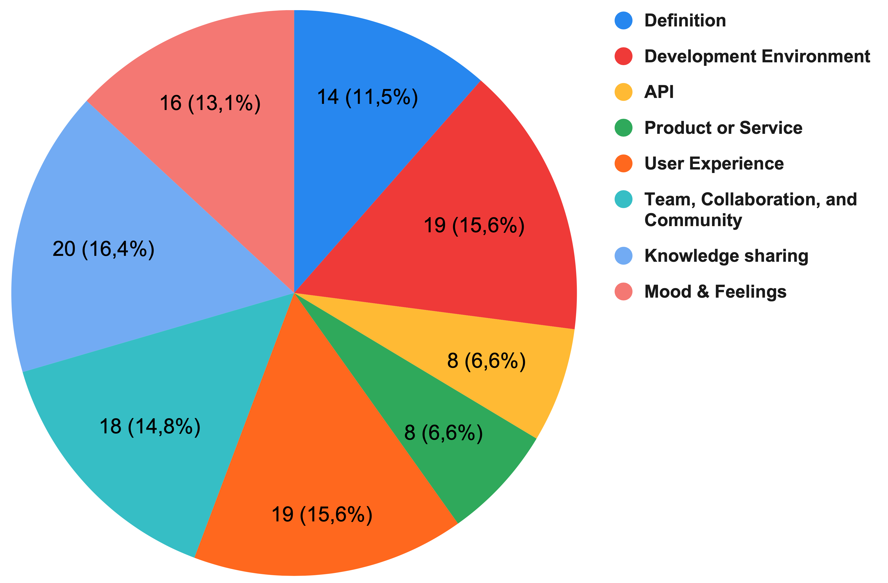
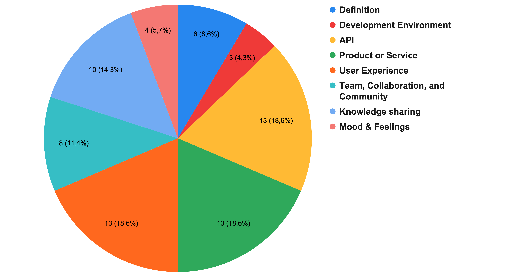

Multivocal literature review on developer experience
Anders Nylund
18.2.2020
Outline
- 1. Introduction and motivation
- 2. Background
- 3. Study
- 4. Results
- 5. Discussion and conclusions
1. Introduction and motivation
"The conventions of the project were confusing and I didn't like to work on it"
"Setting up the development environment was simple and straightforward, and I got the app running in a few minutes"
Problem with current literature on DX:
Definitions vary
Lack of a common understanding
2. Background
(Fagerholm, 2015)
Cognition - How do developers perceive the development infrastructure?
Affect - How do developer feel about their work?
Conation - How do developers see the value of their contribution?
(Fagerholm & Münch, 2013)
(Fagerholm, 2015)
3. Study
Research problem:
"What is the definition and aspects of Developer Experience, and how do they differ between scientific literature and literature written by practitioners?"Research question (1/5)
What objects and entities have been studied with respect to developer experience?Research question (2/5)
What methods have been used to study developer experience?Research question (3/5)
What is known about factors that improve or worsen developer experience?Research question (4/5)
From what contexts is developer experience looked at?Research question (5/5)
What are the definitions given to developer experience?Number of sources in the literature review

4. Results
Object under study (RQ1)
Methods used in scientific literature (RQ2)
Methods used in grey literature (RQ2)
Factors that improve or worsen DX (RQ3)
Context of studies in scientific literature? (RQ4)
Context of studies in grey literature? (RQ4)
5. Discussion and conclusions
Sources
- Fagerholm, F. (2015). Software developer experience: Case studies in lean-agile and open source environments (Doctoral dissertation, University of Helsinki). Retrieved from http://urn.fi/URN:ISBN:978-951-51-1747-2
- Fagerholm, F., & Münch, J. (2013). Developer experience: Concept and definition. CoRR, abs/1312.1452. arXiv: 1312.1452. Retrieved from http://arxiv.org/abs/1312.1452